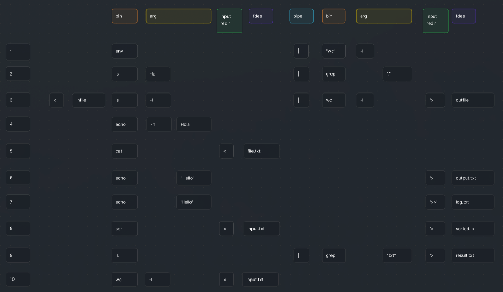

Introduction
The Minishell project is a comprehensive reimplementation of a core component of the Unix environment: the command-line interpreter (shell). Replicating many of the fundamental features of Bash shell, this project serves as a deep dive into system programming, demanding meticulous attention to process management, effective I/O redirection, and complex command line parsing.
It was completed during the 42 common core, in collaboration with John Doe.
At its core, a shell operates in a continuous execution loop, defined by three main phases:
1. Waiting: The shell displays a prompt and awaits user command input.
2. Receiving: The command-line input is captured as a raw string.
3. Processing: The input is then analyzed through a precise, multi-stage pipeline—from parsing to final execution—demonstrating a practical understanding of how operating systems manage user commands and processes.
Key Challenges and Features
During this project, we were asked to:
- Recode essential Built-in Commands (echo, cd, pwd, env, export, unset, exit).
- Handle complex quotes and variable expansion (or why "$USER" and '$USER' behave differently).
- Implement I/O redirections and piping to control data flow between commands.
- Handle recursive wildcard expansion (*) for pattern matching in file names.
- Handle Signals (Ctrl+C, Ctrl+D and Ctrl+\).
Command Line Parsing
The initial and most critical phase of the shell is transforming the raw input string into a structured, executable format.
Initial Tokenization and Testing Blueprint
Before implementing the parser, I needed a complete understanding of how Bash tokenizes complex command lines. I created the visualization below as a rigorous testing blueprint in Bash. This systematic analysis of distinct command scenarios served as the crucial pre-development stage.
Tokenization and Structural Mapping
Data Structure Choice
Instead of a complex Abstract Syntax Tree (AST), we chose an array of command structures. This array-based approach significantly simplifies pipeline execution, as each element directly maps to a stage in the command chain (e.g., cmd1 | cmd2), making process forking and piping straightforward.
The Central Command Structure (`t_cmd`)
The entire pipeline is built around the primary command structure, which encapsulates all necessary information—binaries to execute a single command.
typedef struct s_cmd { char *command; // Binary name (e.g., "ls" or "echo") char *path; // Full binary path (e.g., "/bin/ls") int type; // Command type Enum (USER, BUILTIN, or INVALID) char **args; // Argument list (argv equivalent) int arg_amount; // Number of arguments in the command line t_redir *redir; // I/O redirection (path and type) int redir_amount; // Total number of redirections int heredoc_amount; // Number of heredoc redirections pid_t pid; // Process ID, used during execution t_pipefd *pipe_in; // int fdes[2] for input pipe redirection t_pipefd *pipe_out; // int fdes[2] for output pipe redirection bool is_directory; // Check if command is a directory (error handling) int error_access; // Error number if any access issue occurs } t_cmd;
Parsing Examples in Action
The array-of-structures model proves its efficiency when handling complex command lines that involve multiple pipes (|) and redirections (<, >).
Example 1: Long Pipeline
ls -l | grep "config" | tee configs.txt | wc -l
Path: /usr/bin/ls
Args: ["ls", "-l"]
Total Args: 2 | Total Redirections: 0
Path: /usr/bin/grep
Args: ["grep", "config"]
Total Args: 2 | Total Redirections: 0
Path: /usr/bin/tee
Args: ["tee", "configs.txt"]
Total Args: 2 | Total Redirections: 0
Path: /usr/bin/wc
Args: ["wc", "-l"]
Total Args: 2 | Total Redirections: 0
Each command is an individual t_cmd structure. The shell's execution automatically handles the necessary pipes to connect their input/output streams.
Example 2: Redirection & Pipes
< infile.txt grep a1 | wc -w > outfile.txt
Path: /usr/bin/grep
Args: ["grep", "a1"]
Total Args: 2
Redir[0]: infile.txt (IN REDIR)
Path: /usr/bin/wc
Args: ["wc", "-w"]
Total Args: 2
Redir[0]: outfile.txt (OUT REDIR)
The initial command reads from a file, the output pipes to the second command, and the second command's final output is redirected to a new file.
Quote and Variable Expansion
One of the subtle complexities of shell programming is mastering the rules for single quotes ('), double quotes ("), and variable expansion ($).
Our core challenge was ensuring the shell behaves exactly like Bash:
- Double Quotes (" "): Allow environment variables (like
$PATHor$USER) to be replaced (expanded) with their actual values. - Single Quotes (' '): Treat everything inside literally. No expansion is performed. The dollar sign ($) is treated as a regular character.
Minishell vs. Bash Comparison

echo command executed in Minishell Versus Bash.
The Execution Phase: Fork, Pipe, and Execve
This phase is responsible for correctly running user-defined binaries and built-in commands, managing I/O redirection, and handling pipelines.
Process Management
To run any external command (a non-built-in like /bin/ls), the shell uses a two-step approach:
- fork(): The parent shell process calls
fork()to create an exact copy of itself (the child process) in order to create a new process for the command. - execve(): Inside the child process,
execve()is called. This function replaces the running program, hence the necessity of fork().
// char *cmd.path = "/bin/ls" // char **cmd.args = {"ls", "-l", NULL} // char **env = {"PATH=...", "USER=...", NULL} execve(cmd.path, cmd.args, env) == -1
The parent shell then waits for the child process to terminate, retrieves its exit status that will be expandable using "$?".
Handling Pipelines with pipe()
Pipelines (cmd1 | cmd2) introduce a layer of complexity known as Inter-Process Communication (IPC). The shell uses the pipe() system call to create a connection between the standard output (stdout) of the first command and the standard input (stdin) of the second.
For a sequence of commands, the process involves:
- Before
execve()is called in the child process, the file descriptors for stdin and/or stdout are redirected usingdup2(). - For the first command in the pipe, stdout is pointed to the write-end of the pipe.
- For the second command, stdin is pointed to the read-end of the pipe.
- The child process executes its command, and any output automatically flows through the pipe to the next process's input, completing the chain.
This meticulous orchestration of fork(), pipe(), and file descriptor manipulation is crucial for the shell's ability to run complex chained commands efficiently.